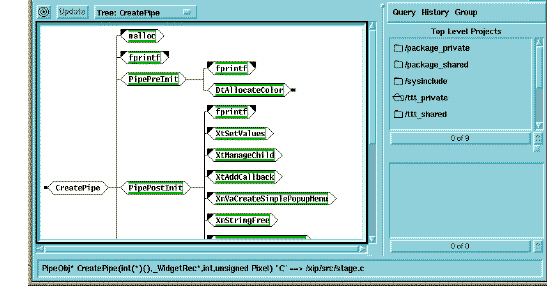
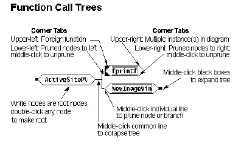

Tree Diagram
A tree diagram displays entity call dependencies.

The selected entity appears as the root, at the left, without coloration. Dependent entities appear as branches, bordered with green. By using the right-click menu, you can change the current root, expand and collapse branches, and remove branches. You can also double-click a branch to open a view of its source code.

Call Tree diagram color codes and graphic symbols